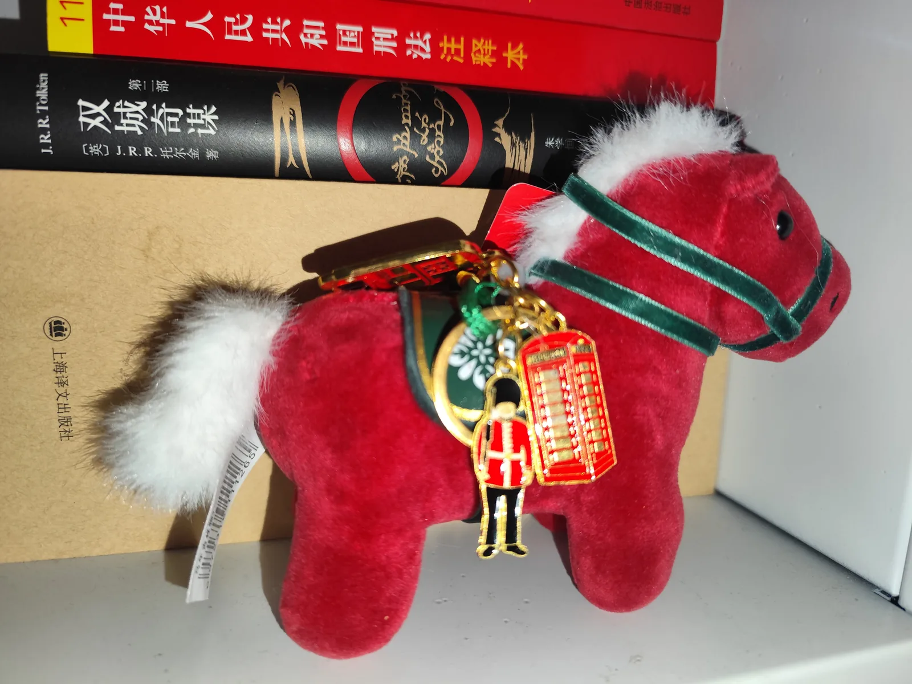
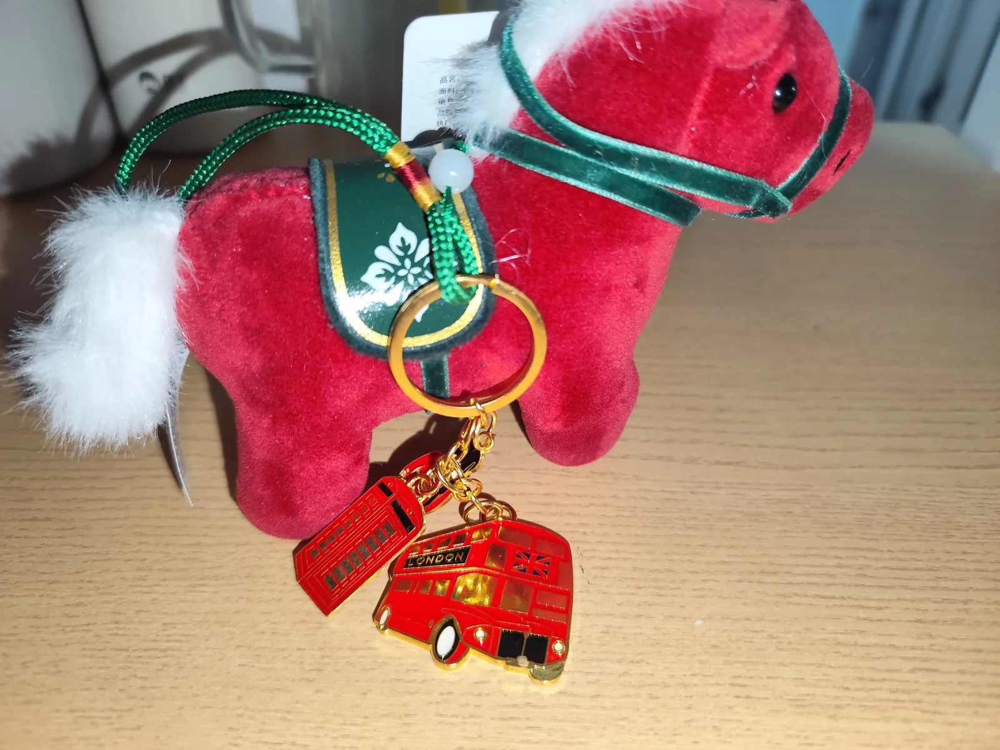

Journal · 2026-08-30


亲爱的甘凳：
2026年8月30日，星期天。
今天我又去学了外语，一门德语，一门法语。
回来的路上，脑子里翻来覆去都是那些话，越想越兴奋，就想着一定要讲给你听。
德语讲的是德国人一天三顿饭怎么吃；法语讲的是怎么问"这是什么"、怎么给一个人画画像、怎么去逛街买东西。
我把要跟你说的话，在心里先过了好几遍，趁着还记得清楚，赶紧写下来。
你听好，我慢慢讲——讲到你能自己接上话，能自己说出那句德语，那我们俩今天就算成了。
---
先讲德国人吃饭。
他们有个特别有意思的老规矩，一句谚语这么说：
Frühstücke wie ein König, iss zu Mittag wie ein Edelmann und zu Abend wie ein Bettler.
翻译过来就是——早餐要吃得像国王，午餐要吃得像贵族，晚餐要吃得像乞丐。
你想想，一天下来，从国王一路掉到乞丐，哈哈，为什么呀？因为晚上要睡觉了，吃太多不好消化。
甘凳，我跟你讲这句的时候，一定会先问你：这三顿哪顿最丰盛？
你肯定答早餐。
那我顺势就教你——"早餐"在德语里叫 das Frühstück，跟我念，弗吕施图克。
午餐叫 das Mittagessen，晚餐叫 das Abendessen，北德人更爱管晚餐叫 das Abendbrot。
对了，德国人的早餐桌上，除了面包，还有人吃麦片，das Müsli，里头有葡萄干和干果，甜丝丝的。
你可记住了，这个单词，今天要出现好几回。
---
然后我要给你变个小魔术，德语最好玩的地方就在这——叫"名词变动词"，把一顿饭的名字，变成"吃这顿饭"的动作。
比如早餐是 das Frühstück，那"吃早餐"就是 frühstücken。
你听，是不是一个词长出了手脚，自己动起来了？
我这么给你讲：
Zum Frühstück gibt es Brot，早餐时有面包。
Ich frühstücke Brot，我早餐吃面包。
你看，前一句是"早餐这个时间有面包"，后一句我直接把面包给"早餐"了，多利索。
午餐、晚餐它俩不变魔术，改成"去午餐""去晚餐"的说法：
Zu Mittag esse ich Rindersteak，我午餐吃牛排。
Zu Abend esse ich nur Salat，我晚餐只吃沙拉。
反过来，"午餐时有牛排"就是 Zum Mittagessen gibt es Rindersteak；"晚餐时只有沙拉"就是 Zum Abendessen gibt es nur Salat。
你发现没有，gibt es 这个"有"可真百搭，三餐全能套。
讲到这儿我肯定要考考你，甘凳——"我午餐吃牛排"怎么说？
你要是能自己说出——
Zu Mittag esse ich Rindersteak。
——那就是真听懂了，不是我念你背。
---
我再告诉你一个冷知识——德国人一天最重要的一顿饭，居然是午餐，不骗你。
他们管午餐叫"正餐"，德语是 die Hauptmahlzeit：Haupt 是"主要的"，Mahlzeit 是"餐"，合起来就是主要的一餐。
顺便说一句，德国人吃饭前还会互相说一句 Mahlzeit，意思就是"开动！"。
这顿正餐时间特别固定，中午十二点到下午两点：
zwischen 12 und 14 Uhr。
午饭吃热的，mittags isst man warm，而且有讲究，由肉、蔬菜和土豆组成——这个"由……组成"，德语就说 bestehen aus：
Es besteht aus Fleisch, Gemüse und Kartoffeln.
我跟你讲的时候，肯定会给你比划：你看，盘子里有肉、有菜、有土豆，这就是德国人正餐的标配。
这个点街上可安静了——学校放学了，die Schulen sind aus；商店和办公室也都午休了，die Geschäfte und Büros machen oft Mittagspause。
很多人回家吃，也有人不回家——另一些人，andere，直接去食堂，die Kantine，或者去餐馆。
---
餐馆里还有一样好东西，叫 das Tagesmenü，就是当天的套餐。
课文那句话我记得特别清楚：
Das ist gut und billig.
又好又便宜，billig 就是便宜。
你想想，一份套餐又好吃又不贵，多省心。
而且课文还告诉我，午餐时人们爱喝点啥——Zum Mittagessen trinkt man gern Saft, Mineralwasser, Bier oder Wein，果汁、矿泉水、啤酒或者葡萄酒，随你挑。
不过我也得跟你说实话——吃午餐通常很花时间的：
Fürs Mittagessen braucht man gewöhnlich viel Zeit.
要是哪天你中午特别忙，没工夫慢慢吃——Wenn Sie nicht viel Zeit haben, dann gehen Sie zu einer Imbissstube，如果您时间不多，那就去一家小吃店（die Imbissstube）；在大城市里，甚至能找到麦当劳，课文里白纸黑字写着 Mc Donald's。
这里头两个词你得记住——brauchen 是需要：
Ich brauche Zeit，我需要时间。
gewöhnlich 和 normalerweise 都是"通常"，一个意思俩说法，就像"通常"跟"一般"。
---
下午茶时间到了，这个画面我可太喜欢了。
德国人下午都泡在咖啡馆里：
Nachmittags sieht man viele Menschen in Cafés.
你往街上一看，全是坐在咖啡馆里的人。
在家呢，人们也爱喝一杯，Auch zu Hause trinkt man gern Kaffee。
尤其周日，besonders sonntags，大家常常约上朋友（der Freund），喝一杯咖啡，吃一块蛋糕：
eine Tasse Kaffee und ein Stück Kuchen.
甘凳，你能想象那个画面吗？阳光、咖啡、蛋糕、朋友，我能想到最舒服的下午，就这样。
besonders 是"尤其"，täglich 是"每天"，跟 jeden Tag 一个意思。
讲到这里我肯定要考你——爷爷每天都喝咖啡，德语怎么说？
Er trinkt täglich Kaffee.
对，每天喝。
---
晚上就该讲北德的晚餐了，这条最有意思。
你还记得谚语里说晚餐像乞丐吧？
北德人干脆把晚餐直接叫 Abendbrot——你听，Abend 是晚上，Brot 是面包，合起来就是"晚上的面包"，一手面包就是一顿晚饭，多实在。
而且北德这顿晚饭吃冷的，吃得也不多：
Zum Abendbrot isst man gewöhnlich kalt und nicht so viel.
都有啥呢？
面包配奶酪或者香肠：
Brot mit Käse oder Wurst.
再来几个番茄或者黄瓜：
ein paar Tomaten oder Gurken.
再配上一杯茶或者一杯啤酒——eine Tasse Tee oder ein Bier。
顺便把一对反义词教给你——warm 是热，kalt 是冷，warm 对 kalt，热的对冷的。
所以德国人晚上这顿，南边吃热乎的，北边啃冷面包，反正都是乞丐待遇，哈哈。
---
德语讲完，我脑子里就开始转法语了。
法语更有意思，我打算带你把三件事玩明白：问"这是什么"，给一个人画画像，还有逛街买东西。
先说问东西。
法语最万能的一句话就是——
Qu'est-ce que c'est ?
这是什么。
你听，像不像连珠炮，凯斯可塞？
回答也简单，单数说：
C'est une photo.
这是一张照片。
复数说：
Ce sont des photos.
这是一些照片。
记住，Ce sont 后面跟复数名词，这个搭配你以后天天见。
我肯定会指着家里的东西考你，你答上来，我就知道你会了。
还有，法语问"什么"有三个兄弟，你可得分清楚——
老大 que，比较文绉绉，喜欢把动词倒过来：
Que fais-tu ? 你做什么。
老二 qu'est-ce que，是万金油，后面直接跟正常语序：
Qu'est-ce que tu fais ? 你做什么。
老三 quoi，是口语里最随便的"啥"，它不能站队首，只能缩在队尾：
C'est quoi ? 这是啥。
Tu fais quoi ? 你做啥。
我跟你讲的时候肯定要逗你：这三个都是"什么"，可一个比一个接地气。
这三个"什么"，还能用来问职业：
Que faites-vous dans la vie ? 您做什么工作？
Qu'est-ce que vous faites dans la vie ? 也是这个意思。
口语里更随便：Vous faites quoi dans la vie ? 您干哪行？
回答也简单——Je suis médecin，我是医生。
---
光知道是什么还不够，还得知道东西在哪儿。
法语的位置词像一张地图：
sur，在……上；
sous，在……下；
dans，在……里；
à côté de，在……旁边；
entre，在……之间；
à gauche de，在……左边；
à droite de，在……右边；
contre，靠着；
au-dessus，在……上方；
au-dessous，在……下方。
课文里有句话跟拍电影似的：
Les livres sont sur l'étagère.
书在书架上。
Ils sont dans la chambre, sous l'étagère à côté de la fenêtre.
它们在卧室里，在窗户旁边的书架下面。
你看，书架、床、窗户，一个句子全给你定位了。
到时候我肯定让你说——我杯子放桌上，怎么说？
La tasse est sur la table.
你要是能说对，我就知道你把 sur 用明白了。
---
然后是重头戏——给甘凳画画像。
法语里警察拼的那种模拟画像叫 portrait-robot，我今天就学会用颜色和衣服给一个人（une personne）画画像了。
先记颜色。
法语里"颜色"本身叫 couleur，颜色词是个"变色龙"，要跟着名词变：
猫是"男生"，就是——
un chat noir，一只黑猫。
桌子是"女生"，就是——
une table noire，一张黑桌子。
你发现没？noir 变成了 noire，多了一个 e。
这就是法语的头一条规矩——颜色要配合名词的阴阳性，名词是阴性的，颜色就得加个 e。
红色 rouge；
黑色 noir、noire；
白色 blanc、blanche；
蓝色 bleu、bleue；
绿色 vert、verte；
黄色 jaune；
橘黄 orange；
紫色 violet、violette；
金发 blond、blonde；
棕发 brun、brune。
描述人的高矮发色也是这套：
grand 是大个儿，petit 是小个子——
Il est grand，他个子高。
Elle est petite，她个子矮。
而且 grand、petit 不光说人，还能说东西——une grande voiture，一辆大汽车；une petite voiture，一辆小汽车。你看，voiture 就是"汽车"。
课文里那句最有画面：
Il y a un homme, grand et blond.
有一个男人，个子高，金头发。
L'autre homme, il est petit et brun.
另一个男人，个子矮，棕头发。
衣服的名字也得记一串：
vêtement 衣服、tee-shirt T恤、pantalon 长裤、chemise 衬衫、jean 牛仔裤、robe 连衣裙、jupe 半身裙、pull-over 套衫、blouson 夹克、manteau 大衣。
---
我还得偷偷告诉你一个法语的小秘密——有些东西天生成双成对，所以永远用复数。
比如眼镜 lunettes，两只镜片；运动鞋 baskets，两只鞋；鞋 chaussures，也是两只；要是说"运动鞋"，还有个说法是 des chaussures de sport。
甘凳，你想想，为什么眼镜永远是复数？
因为你一眼看过去就是两只啊。
所以"他戴眼镜"要说——
Il porte des lunettes.
这里的 porter 就是"穿、戴"的意思——穿衣服、穿鞋、戴眼镜，全靠它一个动词。
到时候我让你说"我穿牛仔裤"，你说——
Je porte un jean.
那就过关了。
---
画像画得差不多了，我再塞给你一队小家伙——法语的重读人称代词，专门跟在介词后面当宾语：
moi 我，toi 你，lui 他，elle 她，vous 您/你们。
课文里那位警察叔叔问完还会补一句：Autre chose ? 还有别的特征吗？那人答：Oui, sa chemise est verte，有，他的衬衫是绿色的。
你要问我这画像是给谁的，我会答——C'est pour toi，这是给你的。你看，pour 后面跟的就是 toi。
---
法语的"不"也特别好玩，像做夹心饼干——ne 和 pas 两块饼干，把动词夹在中间。
Je ne vais pas à Paris.
我不去巴黎。
你看，vais 被夹得严严实实的。
要是动词是元音开头，ne 还得缩成 n'：
Il n'est pas petit.
他个子不矮。
这里头还有个机关——否定句里 des 要变成 de。
课文那句话：
Ils n'ont pas de lunettes.
他们没有眼镜。
本来"有眼镜"是 des lunettes，一否定，就成了 de lunettes。
问"有没有"呢，用 est-ce que：
Est-ce qu'ils ont des lunettes ?
他们戴眼镜吗？
课文里那位叔叔先应了一句 D'accord，好的，才接着这么问。
你看，que 碰到元音开头的 ils，又缩成了 qu'。
我肯定要让你先翻肯定句，你说——
Ils ont des lunettes.
再让你加个否定，你说——
Ils n'ont pas de lunettes.
两句话一对比，今天的两个大机关你就全用上了。
---
最后是逛街，这个最实用，我打算跟你玩角色扮演——我当店员，你当顾客。
店员开口：
Bonjour, qu'est-ce que vous cherchez ?
您好，您找什么？
你答：
Des vêtements pour ma fille et mon fils.
给我女儿和儿子找衣服。
店员接着问：
Quel âge ont-ils ?
他们多大了？
你说：
Ma fille a 16 ans et mon fils 14.
女儿十六，儿子十四。
这时候那位妈妈又拿起一条裤子问女儿：
Comment est-ce que tu trouves ce pantalon ? 你觉得这条裤子怎么样？
女儿答：J'aime bien ce type de pantalon, c'est très joli ! 我很喜欢这种裤子，真好看。
你看，joli 就是"好看"，夸衣服全指望它。
然后重点来了——买衣服就三件事：颜色、尺寸、价格。
问颜色：
Vous avez quelles couleurs ?
你们有什么颜色？
Il y a bleu, gris ou noir.
有蓝的、灰的、黑的。
问尺寸：
Vous avez le gris en taille 38 ?
灰色的有 38 码的吗？
问价格：
Combien ça coûte ?
这多少钱？
课文里一条裤子 59 euros（59 欧），一件套衫 35 euros（35 欧），店员结账一算——
35 et 59… ça fait 94 euros.
一共 94 欧。
你听完价钱，还能接一句——
Ce n'est pas très cher.
不贵嘛。
课文里那个妈妈可会砍价了，一会儿嫌这个，一会儿夸那个：
Ce pull, il est joli, non ?
这件套衫挺好看的，不是吗？
她还会举着一条绿裙子问女儿：Cette robe verte, tu aimes ? 这条绿裙子，你喜欢吗？女儿头摇得像拨浪鼓：Oh, non ! Pas du tout. 哦不，一点都不喜欢。你看，绿色的裙子是 robe verte，颜色又跟着名词变了一回。
我让你来一句——你指着一件外套，问多少钱？
你说：
Combien ça coûte ?
我说——35 euros（35 欧）。你说：
Ce n'est pas très cher.
哈哈，甘凳你都会砍价了。
---
写到这里，我自己都吓了一跳——今天学的东西真不少，脑子里跟过电影似的。
我要是真把这番话讲给你听，讲到你敢自己开口说"我午餐吃牛排"，能自己给一个人画画像，能自己问一句"这多少钱"，那我今天才算没白学。
亲爱的甘凳，等你听完了，你也给我讲一遍——你能讲出来，这些单词才算真成了你的。
明天，咱们接着学。
Dear Gandeng:
Sunday, August 30, 2026.
Today I went to study foreign languages again—one German, one French.
On the way back, those words kept turning over and over in my head; the more I thought, the more excited I grew, and I decided I simply had to tell them to you.
German was about how Germans take their three meals of the day; French was about how to ask "what is this?", how to describe a person, and how to go shopping.
I rehearsed everything I wanted to tell you in my mind several times over, and while it was still fresh, I hurried to write it all down.
Listen closely, I'll take it slowly — until you can pick up the thread yourself and say that German sentence on your own; then our day's lesson will have been a success.
---
First, let's talk about how Germans eat.
They have a wonderfully curious old rule, and a proverb puts it like this:
Frühstücke wie ein König, iss zu Mittag wie ein Edelmann und zu Abend wie ein Bettler.
Translated, it means — breakfast like a king, lunch like a nobleman, and dinner like a beggar.
Think about it—over the course of a day you drop all the way from king to beggar. Haha, why is that? Because you're about to sleep at night, and eating too much doesn't digest well.
Gandeng, when I teach you this, I'll always ask you first: which of the three meals is the most substantial?
You're sure to answer: breakfast.
Then I'll go right ahead and teach you — "breakfast" is das Frühstück in German. Repeat after me: Frühstück.
Lunch is das Mittagessen, dinner is das Abendessen, and northern Germans prefer to call dinner das Abendbrot.
By the way, on the German breakfast table, besides bread, some people eat cereal — das Müsli — full of raisins and dried fruit, pleasantly sweet.
You'd better remember this word—it's going to show up several times today.
---
Then I'm going to do a little magic trick for you — and this is the most delightful part of German: it's called "turning a noun into a verb", changing the name of a meal into the action of "eating that meal".
For example, breakfast is das Frühstück, so "to have breakfast" is frühstücken.
Hear that? It's as if the word grew arms and legs and started moving on its own.
Let me explain it to you like this:
Zum Frühstück gibt es Brot — for breakfast there is bread.
Ich frühstücke Brot — I have bread for breakfast.
You see, the first sentence says "at breakfast time there is bread", and in the second I've simply "breakfasted" the bread — how neat.
Lunch and dinner don't do the magic trick; instead they use "going to lunch" and "going to dinner" constructions:
Zu Mittag esse ich Rindersteak — at lunch I eat steak.
Zu Abend esse ich nur Salat — in the evening I only eat salad.
Conversely, "there is steak at lunch" is Zum Mittagessen gibt es Rindersteak; "there is only salad at dinner" is Zum Abendessen gibt es nur Salat.
Do you notice how versatile gibt es — this "there is" — really is? It fits all three meals.
At this point I'll surely test you, Gandeng — how do you say "I eat steak at lunch"?
If you can say it on your own —
Zu Mittag esse ich Rindersteak.
— then you've truly understood, not just recited after me.
---
Let me share another bit of trivia — the most important meal of the day for Germans turns out to be lunch. No joke.
They call lunch the "main meal" — die Hauptmahlzeit in German: Haupt means "main" and Mahlzeit means "meal", so together it's the principal meal.
By the way, before a meal Germans also say Mahlzeit to one another, which means "bon appétit!" / "dig in!".
This main meal has a very fixed time slot, from noon to two in the afternoon:
zwischen 12 und 14 Uhr.
Lunch is hot — mittags isst man warm — and there's a custom to it: it's made up of meat, vegetables and potatoes — and this "made up of..." is bestehen aus in German:
Es besteht aus Fleisch, Gemüse und Kartoffeln.
When I tell you this, I'll surely act it out: look, on the plate there's meat, vegetables and potatoes — that's the standard German main meal.
At this hour the streets grow quiet — school is out, die Schulen sind aus; shops and offices are also on their lunch break, die Geschäfte und Büros machen oft Mittagspause.
Many people go home to eat, and some don't — others, andere, head straight to the cafeteria, die Kantine, or to a restaurant.
---
There's another nice thing in restaurants, called das Tagesmenü — the daily set meal.
I remember that sentence from the lesson especially clearly:
Das ist gut und billig.
Good and cheap — billig means cheap.
Think about it — a set meal that's both tasty and inexpensive, how worry-free.
The lesson also told me what people like to drink at lunch — Zum Mittagessen trinkt man gern Saft, Mineralwasser, Bier oder Wein — juice, mineral water, beer or wine, take your pick.
But I also have to be honest with you — lunch usually takes quite a lot of time:
Fürs Mittagessen braucht man gewöhnlich viel Zeit.
If one day you're especially busy at noon and have no time to eat slowly — Wenn Sie nicht viel Zeit haben, dann gehen Sie zu einer Imbissstube — if you don't have much time, go to a snack stand (die Imbissstube); in big cities you can even find McDonald's — the lesson spells it out plainly as Mc Donald's.
There are two words here you should remember — brauchen means "to need":
Ich brauche Zeit — I need time.
gewöhnlich and normalerweise both mean "usually" — the same meaning with two expressions, just like "usually" and "generally".
---
Now it's teatime in the afternoon — and I adore this picture.
Germans spend their afternoons sitting in cafés:
Nachmittags sieht man viele Menschen in Cafés.
Look down the street and you'll see people sitting in cafés everywhere.
At home, people also like a cup — Auch zu Hause trinkt man gern Kaffee.
Especially on Sundays — besonders sonntags — people often meet up with friends (der Freund), have a cup of coffee and a slice of cake:
eine Tasse Kaffee und ein Stück Kuchen.
Gandeng, can you picture that scene? Sunshine, coffee, cake, friends — the most comfortable afternoon I can imagine is just like that.
besonders means "especially", and täglich means "daily" — the same as jeden Tag.
At this point I'll surely test you — Grandpa drinks coffee every day; how do you say that in German?
Er trinkt täglich Kaffee.
Right — drinks it every day.
---
In the evening it's time for the North German dinner — and this one is the most interesting.
You remember the proverb said dinner is like a beggar's, right?
Northern Germans simply call dinner Abendbrot — hear it: Abend is "evening" and Brot is "bread", so together it's "evening bread" — a handful of bread is a whole dinner. How down-to-earth.
And this North German dinner is eaten cold, and not much of it either:
Zum Abendbrot isst man gewöhnlich kalt und nicht so viel.
What does it all have?
Bread with cheese or sausage:
Brot mit Käse oder Wurst.
Then a few tomatoes or cucumbers:
ein paar Tomaten oder Gurken.
Washed down with a cup of tea or a beer — eine Tasse Tee oder ein Bier.
By the way, here's a pair of opposites for you — warm means hot and kalt means cold: warm against kalt, hot against cold.
So for the German evening meal, the south eats something hot while the north munches cold bread — either way it's beggar treatment. Haha.
---
Once German was done, my mind started turning to French.
French is even more fun — I plan to take you through three things until you've mastered them: asking "what is this?", drawing a portrait of a person, and going shopping.
First, let's talk about asking what things are.
The most all-purpose sentence in French is —
Qu'est-ce que c'est ?
What is this?
Hear it? Doesn't it sound like rapid fire — kesskesé?
The answer is simple too — for the singular you say:
C'est une photo.
It's a photo.
For the plural you say:
Ce sont des photos.
These are some photos.
Remember, Ce sont is followed by a plural noun — you'll see this pairing every single day from now on.
I'll surely point at things around the house and test you; if you answer correctly, I'll know you've got it.
Also, French has three brothers for asking "what" — you have to tell them apart:
The eldest, que, is rather bookish and likes to invert the verb:
Que fais-tu ? — What are you doing?
The second, qu'est-ce que, is the jack-of-all-trades — it's followed directly by normal word order:
Qu'est-ce que tu fais ? — What are you doing?
The youngest, quoi, is the most casual "what" in speech — it can't stand at the head of the line and can only crouch at the tail:
C'est quoi ? — What is that?
Tu fais quoi ? — What are you doing?
When I tell you this I'll surely tease you: all three mean "what", but each one gets more down-to-earth than the last.
These three "whats" can also be used to ask about someone's profession:
Que faites-vous dans la vie ? — What do you do for a living?
Qu'est-ce que vous faites dans la vie ? — Same meaning.
More casual in speech: Vous faites quoi dans la vie ? — What's your line of work?
The answer is simple too — Je suis médecin, I'm a doctor.
---
Knowing what something is isn't enough — you also need to know where it is.
French prepositions of place are like a map:
sur — on top of...;
sous — underneath...;
dans — inside...;
à côté de — next to...;
entre — between...;
à gauche de — to the left of...;
à droite de — to the right of...;
contre — against...;
au-dessus — above...;
au-dessous — below...
There's a sentence in the lesson that feels like a film shot:
Les livres sont sur l'étagère.
The books are on the shelf.
Ils sont dans la chambre, sous l'étagère à côté de la fenêtre.
They're in the bedroom, under the shelf next to the window.
See — shelf, bed, window, one sentence locates everything for you.
Then I'll surely have you say it — my cup is on the table; how do you say that?
La tasse est sur la table.
If you can say it right, I'll know you've mastered sur.
---
Now for the main event — drawing a portrait of Gandeng.
In French, the composite sketch a police officer puts together is called a portrait-robot, and today I learned how to describe a person (une personne) using colours and clothes.
First, memorize the colours.
In French, "colour" itself is called couleur, and colour words are chameleons — they change to match the noun:
A cat is "male", so it's —
un chat noir — a black cat.
A table is "female", so it's —
une table noire — a black table.
Did you notice? noir became noire — with an extra e.
That's French's first rule — colours have to agree with the noun's gender; if the noun is feminine, the colour gets an extra e.
Red — rouge;
black — noir, noire;
white — blanc, blanche;
blue — bleu, bleue;
green — vert, verte;
yellow — jaune;
orange — orange;
purple — violet, violette;
blond — blond, blonde;
brunette — brun, brune.
Describing a person's height and hair colour follows the same system:
grand means tall/big, petit means short/small —
Il est grand — he is tall.
Elle est petite — she is short.
And grand, petit aren't just for people — they can describe things too: une grande voiture, a big car; une petite voiture, a small car. You see, voiture means "car".
The most vivid sentence in the lesson:
Il y a un homme, grand et blond.
There is a man, tall and blond.
L'autre homme, il est petit et brun.
The other man is short and dark-haired.
You also have to memorize a string of clothing names:
vêtement — clothes, tee-shirt — T-shirt, pantalon — trousers, chemise — shirt, jean — jeans, robe — dress, jupe — skirt, pull-over — sweater, blouson — jacket, manteau — coat.
---
I also have to whisper a little French secret to you — some things are naturally in pairs, so they're always used in the plural.
For example, glasses — lunettes — two lenses; trainers — baskets — two shoes; shoes — chaussures — also two; and for "sports shoes" there's another expression: des chaussures de sport.
Gandeng, think about it — why are glasses always plural?
Because the moment you look, you see two lenses!
So "he wears glasses" has to be said as —
Il porte des lunettes.
Here porter means "to wear" — clothes, shoes, glasses, all rely on this single verb.
Then I'll have you say "I'm wearing jeans", and you'll say —
Je porte un jean.
And you'll have passed.
---
Now that the portrait is nearly done, let me slip you a small troupe — French disjunctive pronouns, which specifically follow prepositions as objects:
moi — me, toi — you, lui — him, elle — her, vous — you (formal/plural).
In the lesson, the police officer adds one more question after finishing: Autre chose ? — Any other features? The man answers: Oui, sa chemise est verte — yes, his shirt is green.
If you ask me who this portrait is for, I'll answer — C'est pour toi, it's for you. See, after pour comes toi.
---
French negation is also great fun — it's like making a sandwich cookie: ne and pas are the two cookies that sandwich the verb in between.
Je ne vais pas à Paris.
I'm not going to Paris.
See — vais is sandwiched in nice and tight.
If the verb starts with a vowel, ne has to be shortened to n':
Il n'est pas petit.
He is not short.
And there's a hidden mechanism here — in negative sentences, des changes to de.
That sentence from the lesson:
Ils n'ont pas de lunettes.
They don't have glasses.
Originally "have glasses" is des lunettes, but once negated it becomes de lunettes.
To ask "do they have...?", you use est-ce que:
Est-ce qu'ils ont des lunettes ?
Do they wear glasses?
In the lesson, the man first replies D'accord — "okay" — before asking that.
See, when que meets ils, which starts with a vowel, it's shortened to qu'.
I'll surely have you first turn it into the affirmative — you say —
Ils ont des lunettes.
Then I'll have you add the negation — you say —
Ils n'ont pas de lunettes.
Compare the two sentences and you'll have put both of today's big mechanisms to full use.
---
Finally, shopping — the most practical of all. I plan to play a role-play with you — I'll be the shop assistant and you'll be the customer.
The shop assistant opens:
Bonjour, qu'est-ce que vous cherchez ?
Hello, what are you looking for?
You answer:
Des vêtements pour ma fille et mon fils.
Clothes for my daughter and my son.
The assistant then asks:
Quel âge ont-ils ?
How old are they?
You say:
Ma fille a 16 ans et mon fils 14.
My daughter is sixteen and my son fourteen.
At this point the mother picks up a pair of trousers and asks her daughter:
Comment est-ce que tu trouves ce pantalon ? — What do you think of these trousers?
The daughter answers: J'aime bien ce type de pantalon, c'est très joli ! — I really like this kind of trousers, it's very pretty!
See, joli means "pretty" — it's the word you rely on to compliment clothes.
Now comes the key part — buying clothes comes down to three things: colour, size and price.
Asking about colour:
Vous avez quelles couleurs ?
What colours do you have?
Il y a bleu, gris ou noir.
There's blue, grey or black.
Asking about size:
Vous avez le gris en taille 38 ?
Do you have the grey one in size 38?
Asking about price:
Combien ça coûte ?
How much does it cost?
In the lesson a pair of trousers costs 59 euros and a sweater 35 euros; the assistant adds it up at the till —
35 et 59… ça fait 94 euros.
That comes to 94 euros altogether.
After hearing the price, you can even add —
Ce n'est pas très cher.
That's not very expensive.
The mother in the lesson is quite the bargainer — one moment she criticizes one thing, the next she praises another:
Ce pull, il est joli, non ?
This sweater is quite pretty, isn't it?
She even holds up a green dress and asks her daughter: Cette robe verte, tu aimes ? — This green dress, do you like it? The daughter shakes her head like a rattle: Oh, non ! Pas du tout. — Oh no! Not at all. See, a green dress is robe verte — the colour has agreed with the noun once again.
I'll have you do one — you point at a coat and ask how much it costs?
You say:
Combien ça coûte ?
I say — 35 euros. You say:
Ce n'est pas très cher.
Haha, Gandeng, you can bargain now.
---
Writing this far, even I was startled — I learned quite a lot today, and it all plays through my mind like a film.
If I really tell you all this, until you dare to say "I eat steak at lunch" on your own, can describe a person yourself, and can ask "how much does this cost?" yourself, then today's studying won't have been in vain.
Dear Gandeng, once you've heard it all, tell it back to me — only when you can say it out loud do these words truly become yours.
Tomorrow, we'll keep learning.
Chère Gandeng :
Dimanche 30 août 2026.
Aujourd'hui, je suis encore allé étudier des langues étrangères : l'allemand et le français.
Sur le chemin du retour, ces mots tournaient et retournaient dans ma tête ; plus j'y pensais, plus j'étais excité, et je me suis dit qu'il fallait absolument te les raconter.
L'allemand parlait de la façon dont les Allemands prennent leurs trois repas de la journée ; le français, de comment demander « qu'est-ce que c'est ? », comment faire le portrait d'une personne et comment aller faire les courses.
J'ai repassé plusieurs fois dans ma tête tout ce que je voulais te dire et, tant que je m'en souvenais bien, je me suis dépêché de l'écrire.
Écoute bien, je vais y aller doucement — jusqu'à ce que tu puisses enchaîner tout seul et prononcer toi-même cette phrase en allemand ; alors notre leçon du jour sera réussie.
---
Commençons par les repas des Allemands.
Ils ont une vieille règle particulièrement amusante, et un proverbe le dit ainsi :
Frühstücke wie ein König, iss zu Mittag wie ein Edelmann und zu Abend wie ein Bettler.
Traduit, cela signifie — déjeune comme un roi, mange comme un noble et soupe comme un mendiant.
Imagine : au fil de la journée, on descend du roi jusqu'au mendiant. Haha, pourquoi donc ? Parce que le soir, on va dormir, et trop manger se digère mal.
Gandeng, quand je t'expliquerai cette phrase, je te demanderai d'abord : lequel de ces trois repas est le plus copieux ?
Tu répondras sûrement : le petit-déjeuner.
Alors j'enchaîne et je t'apprends — « le petit-déjeuner » se dit das Frühstück en allemand. Répète après moi : Frühstück.
Le déjeuner se dit das Mittagessen, le dîner das Abendessen, et les Allemands du Nord préfèrent appeler le dîner das Abendbrot.
D'ailleurs, sur la table du petit-déjeuner allemand, outre le pain, certains mangent des céréales — das Müsli — avec des raisins secs et des fruits secs, tout sucrés.
Retiens bien ce mot — il va revenir plusieurs fois aujourd'hui.
---
Ensuite, je vais te faire un petit tour de magie — c'est là le plus amusant de l'allemand : ça s'appelle « transformer un nom en verbe », faire passer le nom d'un repas à l'action de « prendre ce repas ».
Par exemple, le petit-déjeuner est das Frühstück, donc « prendre le petit-déjeuner » se dit frühstücken.
Tu entends ? C'est comme si le mot avait poussé des bras et des jambes et se mettait à bouger tout seul.
Voici comment je te l'explique :
Zum Frühstück gibt es Brot — au petit-déjeuner, il y a du pain.
Ich frühstücke Brot — je prends du pain au petit-déjeuner.
Tu vois, la première phrase dit « au moment du petit-déjeuner, il y a du pain », et dans la seconde, j'ai directement « petit-déjeuné » le pain — quel chic.
Le déjeuner et le dîner, eux, ne font pas le tour de magie ; ils utilisent plutôt les formes « aller au déjeuner » et « aller au dîner » :
Zu Mittag esse ich Rindersteak — au déjeuner, je mange du steak.
Zu Abend esse ich nur Salat — le soir, je ne mange que de la salade.
À l'inverse, « il y a du steak au déjeuner » se dit Zum Mittagessen gibt es Rindersteak ; « il n'y a que de la salade au dîner » se dit Zum Abendessen gibt es nur Salat.
Tu remarques comme ce « il y a » — gibt es — est vraiment passe-partout ? Il s'applique aux trois repas.
Là, je vais sûrement t'interroger, Gandeng — comment dit-on « je mange du steak au déjeuner » ?
Si tu peux le dire tout seul —
Zu Mittag esse ich Rindersteak.
— alors tu auras vraiment compris, et non récité après moi.
---
Je vais te révéler un autre fait étonnant — le repas le plus important de la journée pour les Allemands, c'est le déjeuner. Sans blague.
Ils appellent le déjeuner le « repas principal » — die Hauptmahlzeit en allemand : Haupt signifie « principal » et Mahlzeit « repas », ensemble cela donne le repas principal.
Au fait, avant de manger, les Allemands se disent aussi Mahlzeit, ce qui signifie « bon appétit ! ».
Ce repas principal a un créneau très fixe, de midi à deux heures de l'après-midi :
zwischen 12 und 14 Uhr.
Le déjeuner est chaud — mittags isst man warm — et il obéit à un usage : il se compose de viande, de légumes et de pommes de terre — et ce « se composer de... » se dit bestehen aus en allemand :
Es besteht aus Fleisch, Gemüse und Kartoffeln.
Quand je te l'expliquerai, je te le mimerai sûrement : regarde, dans l'assiette il y a de la viande, des légumes et des pommes de terre — c'est le standard du repas principal allemand.
À cette heure, les rues deviennent calmes — l'école est finie, die Schulen sind aus ; les magasins et les bureaux font aussi leur pause déjeuner, die Geschäfte und Büros machen oft Mittagspause.
Beaucoup rentrent manger chez eux, et certains non — d'autres, andere, vont directement à la cantine, die Kantine, ou au restaurant.
---
Il y a encore une bonne chose au restaurant, appelée das Tagesmenü — le menu du jour.
Je me souviens très bien de cette phrase de la leçon :
Das ist gut und billig.
Bon et pas cher — billig signifie « bon marché ».
Imagine : un menu à la fois bon et pas cher, quel confort.
La leçon m'a aussi appris ce que les gens aiment boire au déjeuner — Zum Mittagessen trinkt man gern Saft, Mineralwasser, Bier oder Wein — jus, eau minérale, bière ou vin, à toi de choisir.
Mais je dois aussi être honnête avec toi — le déjeuner prend d'ordinaire beaucoup de temps :
Fürs Mittagessen braucht man gewöhnlich viel Zeit.
Si un jour tu es particulièrement occupé à midi et que tu n'as pas le temps de manger tranquillement — Wenn Sie nicht viel Zeit haben, dann gehen Sie zu einer Imbissstube — si vous n'avez pas beaucoup de temps, allez dans une petite échoppe (die Imbissstube) ; dans les grandes villes, on trouve même des McDonald's — la leçon l'écrit noir sur blanc : Mc Donald's.
Il y a deux mots à retenir ici — brauchen signifie « avoir besoin » :
Ich brauche Zeit — j'ai besoin de temps.
gewöhnlich et normalerweise signifient tous deux « d'ordinaire » — même sens, deux façons de dire, comme « d'ordinaire » et « en général ».
---
Voilà l'heure du goûter de l'après-midi — et j'adore cette image.
Les Allemands passent leurs après-midi dans les cafés :
Nachmittags sieht man viele Menschen in Cafés.
Regarde la rue : il n'y a que des gens assis dans les cafés.
À la maison aussi, on aime boire une tasse — Auch zu Hause trinkt man gern Kaffee.
Surtout le dimanche — besonders sonntags — on retrouve souvent des amis (der Freund), pour un café et une part de gâteau :
eine Tasse Kaffee und ein Stück Kuchen.
Gandeng, tu imagines cette scène ? Soleil, café, gâteau, amis — l'après-midi le plus agréable que je puisse imaginer ressemble à ça.
besonders signifie « surtout », et täglich « quotidiennement » — la même chose que jeden Tag.
Là, je vais sûrement t'interroger — grand-père boit du café tous les jours ; comment dit-on cela en allemand ?
Er trinkt täglich Kaffee.
Oui — il en boit tous les jours.
---
Le soir, il faut parler du dîner du Nord de l'Allemagne — et c'est le plus intéressant.
Tu te souviens que le proverbe disait que le dîner est comme celui d'un mendiant ?
Les Allemands du Nord appellent carrément le dîner Abendbrot — écoute : Abend signifie « soir » et Brot « pain », ensemble cela donne « pain du soir » — un quignon de pain fait tout un dîner. Comme c'est pragmatique.
Et ce dîner du Nord se mange froid, et pas en grande quantité :
Zum Abendbrot isst man gewöhnlich kalt und nicht so viel.
Qu'est-ce qu'il y a dedans ?
Du pain avec du fromage ou de la saucisse :
Brot mit Käse oder Wurst.
Puis quelques tomates ou concombres :
ein paar Tomaten oder Gurken.
Le tout accompagné d'une tasse de thé ou d'une bière — eine Tasse Tee oder ein Bier.
Au passage, voici une paire d'antonymes — warm signifie « chaud » et kalt « froid » : warm contre kalt, chaud contre froid.
Ainsi, pour le dîner allemand, le Sud mange chaud et le Nord croque du pain froid — de toute façon, c'est un traitement de mendiant. Haha.
---
Une fois l'allemand terminé, ma tête s'est mise à passer au français.
Le français est encore plus amusant — je compte t'emmener à travers trois choses jusqu'à ce que tu les maîtrises : demander « qu'est-ce que c'est ? », faire le portrait d'une personne, et faire les courses.
D'abord, demander ce que sont les choses.
La phrase la plus passe-partout du français est —
Qu'est-ce que c'est ?
Qu'est-ce que c'est ?
Écoute : on dirait une rafale, n'est-ce pas ?
La réponse est simple aussi — au singulier on dit :
C'est une photo.
C'est une photo.
Au pluriel on dit :
Ce sont des photos.
Ce sont des photos.
Retiens que Ce sont est suivi d'un nom au pluriel — tu rencontreras ce couple tous les jours à partir de maintenant.
Je vais sûrement pointer des objets de la maison pour te tester ; si tu réponds juste, je saurai que tu sais.
D'ailleurs, en français il y a trois frères pour demander « quoi » — il faut bien les distinguer :
L'aîné, que, est plutôt soutenu et aime inverser le verbe :
Que fais-tu ? — Qu'est-ce que tu fais ?
Le deuxième, qu'est-ce que, est le couteau suisse — suivi directement de l'ordre normal des mots :
Qu'est-ce que tu fais ? — Qu'est-ce que tu fais ?
Le petit dernier, quoi, est le « quoi » le plus familier de la langue parlée — il ne peut pas se mettre en tête de phrase, seulement se blottir en queue :
C'est quoi ? — C'est quoi ?
Tu fais quoi ? — Tu fais quoi ?
Quand je te l'expliquerai, je vais sûrement te taquiner : ces trois-là veulent tous dire « quoi », mais chacun est plus familier que le précédent.
Ces trois « quoi » servent aussi à demander le métier :
Que faites-vous dans la vie ? — Que faites-vous dans la vie ?
Qu'est-ce que vous faites dans la vie ? — Même sens.
Plus familier à l'oral : Vous faites quoi dans la vie ? — Vous faites quoi dans la vie ?
La réponse est simple aussi — Je suis médecin, je suis médecin.
---
Savoir ce qu'est une chose ne suffit pas — il faut aussi savoir où elle se trouve.
Les prépositions de lieu du français forment une carte :
sur — sur... ;
sous — sous... ;
dans — dans... ;
à côté de — à côté de... ;
entre — entre... ;
à gauche de — à gauche de... ;
à droite de — à droite de... ;
contre — contre... ;
au-dessus — au-dessus... ;
au-dessous — au-dessous...
Il y a une phrase dans la leçon qui semble tout droit sortie d'un film :
Les livres sont sur l'étagère.
Les livres sont sur l'étagère.
Ils sont dans la chambre, sous l'étagère à côté de la fenêtre.
Ils sont dans la chambre, sous l'étagère à côté de la fenêtre.
Tu vois — étagère, lit, fenêtre, une seule phrase situe tout.
Alors je te ferai sûrement dire — ma tasse est sur la table ; comment le dit-on ?
La tasse est sur la table.
Si tu le dis correctement, je saurai que tu maîtrises sur.
---
Passons au plat de résistance — faire le portrait de Gandeng.
Le portrait-robot que compose la police s'appelle portrait-robot en français, et aujourd'hui j'ai appris à décrire une personne (une personne) avec des couleurs et des vêtements.
D'abord, mémorisons les couleurs.
En français, « couleur » se dit couleur, et les mots de couleur sont des caméléons — ils s'accordent avec le nom :
Un chat est « masculin », donc —
un chat noir — un chat noir.
Une table est « féminine », donc —
une table noire — une table noire.
Tu as remarqué ? noir devient noire — avec un e en plus.
C'est la première règle du français — les couleurs doivent s'accorder avec le genre du nom ; si le nom est féminin, la couleur prend un e.
Rouge — rouge ;
noir — noir, noire ;
blanc — blanc, blanche ;
bleu — bleu, bleue ;
vert — vert, verte ;
jaune — jaune ;
orange — orange ;
violet — violet, violette ;
blond — blond, blonde ;
brun — brun, brune.
Décrire la taille et la couleur des cheveux suit le même système :
grand signifie « grand », petit « petit » —
Il est grand — il est grand.
Elle est petite — elle est petite.
Et grand, petit ne s'emploient pas que pour les gens — ils décrivent aussi les choses : une grande voiture, une grande voiture ; une petite voiture, une petite voiture. Tu vois, voiture signifie « voiture ».
La phrase la plus imagée de la leçon :
Il y a un homme, grand et blond.
Il y a un homme, grand et blond.
L'autre homme, il est petit et brun.
L'autre homme est petit et brun.
Il faut aussi mémoriser une série de noms de vêtements :
vêtement — vêtement, tee-shirt — tee-shirt, pantalon — pantalon, chemise — chemise, jean — jean, robe — robe, jupe — jupe, pull-over — pull-over, blouson — blouson, manteau — manteau.
---
Je dois aussi te murmurer un petit secret du français — certaines choses vont naturellement par paires, donc elles s'emploient toujours au pluriel.
Par exemple, les lunettes — lunettes — deux verres ; les baskets — baskets — deux chaussures ; les chaussures — chaussures — deux aussi ; et pour « chaussures de sport », il y a une autre expression : des chaussures de sport.
Gandeng, réfléchis — pourquoi les lunettes sont-elles toujours au pluriel ?
Parce qu'au premier coup d'œil, tu en vois deux !
Donc « il porte des lunettes » se dit —
Il porte des lunettes.
Ici, porter signifie « porter » — vêtements, chaussures, lunettes, tout repose sur ce seul verbe.
Alors je te ferai dire « je porte un jean », et tu diras —
Je porte un jean.
Et tu auras réussi.
---
Le portrait étant presque terminé, je te glisse une petite troupe — les pronoms toniques du français, qui suivent surtout les prépositions comme compléments :
moi — moi, toi — toi, lui — lui, elle — elle, vous — vous.
Dans la leçon, le policier ajoute encore une question : Autre chose ? — Autre chose ? L'homme répond : Oui, sa chemise est verte — oui, sa chemise est verte.
Si tu me demandes à qui est ce portrait, je répondrai — C'est pour toi, c'est pour toi. Tu vois, après pour vient toi.
---
La négation française est aussi très amusante — comme un biscuit fourré : ne et pas sont les deux biscuits qui prennent le verbe en sandwich.
Je ne vais pas à Paris.
Je ne vais pas à Paris.
Tu vois — vais est bien pris en sandwich.
Si le verbe commence par une voyelle, ne doit se réduire à n' :
Il n'est pas petit.
Il n'est pas petit.
Et il y a un mécanisme caché — dans les phrases négatives, des devient de.
Cette phrase de la leçon :
Ils n'ont pas de lunettes.
Ils n'ont pas de lunettes.
À l'origine, « avoir des lunettes » se dit des lunettes ; une fois nié, cela devient de lunettes.
Pour demander « est-ce qu'ils ont... ? », on utilise est-ce que :
Est-ce qu'ils ont des lunettes ?
Est-ce qu'ils ont des lunettes ?
Dans la leçon, l'homme répond d'abord D'accord — d'accord — avant de poser cette question.
Tu vois, quand que rencontre ils, qui commence par une voyelle, il se réduit à qu'.
Je vais sûrement te faire mettre d'abord à l'affirmatif — tu dis —
Ils ont des lunettes.
Puis je te ferai ajouter la négation — tu dis —
Ils n'ont pas de lunettes.
Compare les deux phrases et tu auras utilisé les deux grands mécanismes d'aujourd'hui.
---
Enfin, les courses — le plus pratique de tout. Je compte faire un jeu de rôle avec toi — je serai le vendeur et toi le client.
Le vendeur ouvre la conversation :
Bonjour, qu'est-ce que vous cherchez ?
Bonjour, qu'est-ce que vous cherchez ?
Tu réponds :
Des vêtements pour ma fille et mon fils.
Des vêtements pour ma fille et mon fils.
Le vendeur demande alors :
Quel âge ont-ils ?
Quel âge ont-ils ?
Tu dis :
Ma fille a 16 ans et mon fils 14.
Ma fille a seize ans et mon fils quatorze.
Là, la mère prend un pantalon et demande à sa fille :
Comment est-ce que tu trouves ce pantalon ? — Comment est-ce que tu trouves ce pantalon ?
La fille répond : J'aime bien ce type de pantalon, c'est très joli ! — J'aime bien ce type de pantalon, c'est très joli !
Tu vois, joli signifie « joli » — c'est le mot sur lequel on compte pour complimenter les vêtements.
Voilà le point clé — acheter des vêtements, c'est trois choses : la couleur, la taille et le prix.
Demander la couleur :
Vous avez quelles couleurs ?
Vous avez quelles couleurs ?
Il y a bleu, gris ou noir.
Il y a du bleu, du gris ou du noir.
Demander la taille :
Vous avez le gris en taille 38 ?
Vous avez le gris en taille 38 ?
Demander le prix :
Combien ça coûte ?
Combien ça coûte ?
Dans la leçon, un pantalon coûte 59 euros et un pull-over 35 euros ; le vendeur fait le total à la caisse —
35 et 59… ça fait 94 euros.
Ça fait 94 euros au total.
Après avoir entendu le prix, tu peux même ajouter —
Ce n'est pas très cher.
Ce n'est pas très cher.
La mère de la leçon sait marchander — tantôt elle critique une chose, tantôt elle en loue une autre :
Ce pull, il est joli, non ?
Ce pull est joli, n'est-ce pas ?
Elle soulève même une robe verte et demande à sa fille : Cette robe verte, tu aimes ? — Cette robe verte, tu aimes ? La fille secoue la tête comme un hochet : Oh, non ! Pas du tout. — Oh, non ! Pas du tout. Tu vois, une robe verte se dit robe verte — la couleur s'accorde encore une fois avec le nom.
Je te fais faire une phrase — tu pointes un manteau et demandes combien il coûte ?
Tu dis :
Combien ça coûte ?
Je dis — 35 euros. Tu dis :
Ce n'est pas très cher.
Haha, Gandeng, tu sais déjà marchander.
---
En écrivant jusqu'ici, j'ai moi-même été surpris — j'ai appris pas mal de choses aujourd'hui, et tout défile dans ma tête comme un film.
Si je te raconte vraiment tout cela, jusqu'à ce que tu oses dire toi-même « je mange du steak au déjeuner », que tu saches décrire une personne tout seul et demander toi-même « combien ça coûte ? », alors ma journée d'étude n'aura pas été vaine.
Chère Gandeng, quand tu auras tout écouté, raconte-le-moi à ton tour — ce n'est que lorsque tu pourras le dire que ces mots seront vraiment devenus les tiens.
Demain, nous continuerons à apprendre.
Liebe Gandeng:
Sonntag, der 30. August 2026.
Heute habe ich wieder Fremdsprachen gelernt — eine Deutsch, eine Französisch.
Auf dem Rückweg kreisten mir diese Worte immer wieder im Kopf herum; je mehr ich darüber nachdachte, desto aufgeregter wurde ich, und ich beschloss, dass ich sie dir unbedingt erzählen muss.
Im Deutschunterricht ging es darum, wie die Deutschen ihre drei Mahlzeiten am Tag einnehmen ; im Französischunterricht darum, wie man fragt „Was ist das?“, wie man eine Person beschreibt und wie man einkaufen geht.
Ich habe alles, was ich dir erzählen wollte, mehrfach im Kopf durchgespielt und, solange ich es noch genau wusste, schnell aufgeschrieben.
Hör gut zu, ich gehe es langsam an — bis du von selbst den Faden aufnehmen und den deutschen Satz selbst sagen kannst; dann ist unsere Lektion heute gelungen.
---
Zuerst zu den Mahlzeiten der Deutschen.
Sie haben eine besonders unterhaltsame alte Regel, und ein Sprichwort sagt dazu Folgendes:
Frühstücke wie ein König, iss zu Mittag wie ein Edelmann und zu Abend wie ein Bettler.
Übersetzt heißt das — frühstücke wie ein König, iss zu Mittag wie ein Edelmann und zu Abend wie ein Bettler.
Stell dir vor: Im Laufe des Tages fällt man vom König runter zum Bettler. Haha, warum bloß? Weil man abends schlafen geht und zu viel Essen schlecht verdaut wird.
Gandeng, wenn ich dir das beibringe, werde ich dich zuerst fragen: Welche der drei Mahlzeiten ist die üppigste?
Du wirst sicher antworten: das Frühstück.
Dann lege ich direkt los und bringe dir bei — „Frühstück“ heißt auf Deutsch das Frühstück. Sprich mir nach: das Frühstück.
Das Mittagessen heißt das Mittagessen, das Abendessen das Abendessen, und die Norddeutschen nennen das Abendessen lieber das Abendbrot.
Übrigens: Auf dem deutschen Frühstückstisch gibt es neben Brot auch Müsli — das Müsli — mit Rosinen und Trockenfrüchten, schön süß.
Merke dir dieses Wort gut — es wird heute mehrfach auftauchen.
---
Dann zaubere ich dir etwas vor — und das ist das Schönste am Deutschen: das nennt man „Substantiv zum Verb machen“, aus dem Namen einer Mahlzeit wird die Handlung „diese Mahlzeit essen“.
Zum Beispiel ist das Frühstück das Frühstück, also heißt „frühstücken“ frühstücken.
Hörst du? Als ob das Wort Arme und Beine bekommen hätte und sich von selbst bewegen würde.
Ich erkläre es dir so:
Zum Frühstück gibt es Brot — zum Frühstück gibt es Brot.
Ich frühstücke Brot — ich frühstücke Brot.
Siehst du, der erste Satz sagt „zum Frühstück gibt es Brot“, und im zweiten habe ich das Brot einfach „gefrühstückt“ — wie elegant.
Mittagessen und Abendessen machen den Zaubertrick nicht; stattdessen benutzen sie „zum Mittagessen“ und „zum Abendessen“:
Zu Mittag esse ich Rindersteak — zu Mittag esse ich Rindersteak.
Zu Abend esse ich nur Salat — zu Abend esse ich nur Salat.
Umgekehrt heißt „zum Mittagessen gibt es Rindersteak“ Zum Mittagessen gibt es Rindersteak; „zum Abendessen gibt es nur Salat“ heißt Zum Abendessen gibt es nur Salat.
Merkst du, wie vielseitig dieses „gibt es“ — dieses „es gibt“ — ist? Es passt zu allen drei Mahlzeiten.
Hier werde ich dich sicher prüfen, Gandeng — wie sagt man „ich esse zu Mittag Rindersteak“?
Wenn du es selbst sagen kannst —
Zu Mittag esse ich Rindersteak.
— dann hast du es wirklich verstanden und nicht nur nachgesprochen.
---
Ich verrate dir noch eine verblüffende Tatsache — die wichtigste Mahlzeit des Tages ist für die Deutschen das Mittagessen. Kein Scherz.
Sie nennen das Mittagessen die „Hauptmahlzeit“ — auf Deutsch die Hauptmahlzeit: Haupt heißt „hauptsächlich“ und Mahlzeit „Mahlzeit“, zusammen also die hauptsächliche Mahlzeit.
Übrigens sagen die Deutschen vor dem Essen auch zueinander Mahlzeit, das heißt so viel wie „Mahlzeit!“ bzw. „Guten Appetit!“.
Diese Hauptmahlzeit hat einen sehr festen Zeitrahmen, von zwölf bis zwei Uhr mittags:
zwischen 12 und 14 Uhr.
Das Mittagessen ist warm — mittags isst man warm — und es hat seine Regel: Es besteht aus Fleisch, Gemüse und Kartoffeln — und dieses „bestehen aus“ heißt auf Deutsch bestehen aus:
Es besteht aus Fleisch, Gemüse und Kartoffeln.
Wenn ich dir das erzähle, werde ich es dir sicher vormachen: Schau, auf dem Teller gibt es Fleisch, Gemüse und Kartoffeln — das ist die Standard-Hauptmahlzeit der Deutschen.
Um diese Zeit wird es auf der Straße ruhig — die Schule ist aus, die Schulen sind aus; auch Geschäfte und Büros machen Mittagspause, die Geschäfte und Büros machen oft Mittagspause.
Viele gehen zum Essen nach Hause, manche auch nicht — andere, andere, gehen direkt in die Kantine, die Kantine, oder ins Restaurant.
---
Im Restaurant gibt es noch etwas Gutes, das Tagesmenü — das Gericht des Tages.
Diesen Satz aus dem Lehrbuch erinnere ich besonders gut:
Das ist gut und billig.
Gut und billig — billig heißt „billig“.
Denk mal: ein Menü, das lecker und nicht teuer ist, wie beruhigend.
Das Lehrbuch hat mir auch gesagt, was man zum Mittagessen gern trinkt — Zum Mittagessen trinkt man gern Saft, Mineralwasser, Bier oder Wein — Saft, Mineralwasser, Bier oder Wein, ganz wie du magst.
Aber ich muss dir auch ehrlich sagen — das Mittagessen dauert gewöhnlich lange:
Fürs Mittagessen braucht man gewöhnlich viel Zeit.
Wenn du eines Tages mittags besonders beschäftigt bist und keine Zeit für ein gemütliches Essen hast — Wenn Sie nicht viel Zeit haben, dann gehen Sie zu einer Imbissstube — wenn Sie nicht viel Zeit haben, gehen Sie zu einem Imbissstand (die Imbissstube); in großen Städten findet man sogar McDonald's — das Lehrbuch schreibt es schwarz auf weiß: Mc Donald's.
Zwei Wörter musst du dir hier merken — brauchen heißt „brauchen“:
Ich brauche Zeit — ich brauche Zeit.
gewöhnlich und normalerweise bedeuten beide „gewöhnlich“ — gleiche Bedeutung, zwei Ausdrücke, wie „üblicherweise“ und „normalerweise“.
---
Jetzt ist die Zeit des Nachmittagskaffees gekommen — und dieses Bild gefällt mir unheimlich.
Die Deutschen sitzen nachmittags in den Cafés:
Nachmittags sieht man viele Menschen in Cafés.
Schau auf die Straße — überall sitzen Menschen in Cafés.
Auch zu Hause trinkt man gern Kaffee — auch zu Hause trinkt man gern Kaffee.
Besonders sonntags, besonders sonntags, verabredet man sich oft mit Freunden (der Freund), trinkt einen Kaffee und isst ein Stück Kuchen:
eine Tasse Kaffee und ein Stück Kuchen.
Gandeng, kannst du dir das vorstellen? Sonne, Kaffee, Kuchen, Freunde — so sieht der gemütlichste Nachmittag aus, den ich mir vorstellen kann.
besonders heißt „besonders“, täglich heißt „täglich“ — dasselbe wie jeden Tag.
Hier werde ich dich sicher prüfen — Opa trinkt jeden Tag Kaffee; wie sagt man das auf Deutsch?
Er trinkt täglich Kaffee.
Genau — trinkt jeden Tag.
---
Abends kommt das Abendessen Norddeutschlands dran — und das ist am interessantesten.
Du erinnerst dich, dass das Sprichwort sagt, das Abendessen sei wie das eines Bettlers?
Die Norddeutschen nennen das Abendessen schlicht Abendbrot — hör zu: Abend ist „Abend“ und Brot ist „Brot“, zusammen also „Abendbrot“ — ein Stück Brot ist ein ganzes Abendessen. Wie bodenständig.
Und dieses norddeutsche Abendessen wird kalt gegessen, und auch nicht viel:
Zum Abendbrot isst man gewöhnlich kalt und nicht so viel.
Was gibt es da alles?
Brot mit Käse oder Wurst:
Brot mit Käse oder Wurst.
Dazu ein paar Tomaten oder Gurken:
ein paar Tomaten oder Gurken.
Dazu eine Tasse Tee oder ein Bier — eine Tasse Tee oder ein Bier.
Nebenbei bringe ich dir ein Gegensatzpaar bei — warm heißt „warm“ und kalt heißt „kalt“: warm gegenüber kalt, warm gegenüber kalt.
Beim deutschen Abendessen isst der Süden also etwas Warmes, während der Norden kaltes Brot kaut — so oder so, Bettler-Behandlung. Haha.
---
Als Deutsch fertig war, fing mein Kopf an, sich dem Französischen zuzuwenden.
Französisch macht noch mehr Spaß — ich möchte mit dir drei Dinge durchgehen, bis du sie kannst: „Was ist das?“ fragen, eine Person beschreiben und einkaufen gehen.
Zuerst zum Fragen nach Dingen.
Der vielseitigste Satz im Französischen ist —
Qu'est-ce que c'est ?
Was ist das?
Hörst du? Klingt es nicht wie ein Schnellfeuer — kesskesé?
Die Antwort ist auch einfach — im Singular sagt man:
C'est une photo.
Das ist ein Foto.
Im Plural sagt man:
Ce sont des photos.
Das sind ein paar Fotos.
Merke: Auf Ce sont folgt ein Nomen im Plural — diese Kombination wirst du von nun an jeden Tag sehen.
Ich werde sicher auf Dinge im Haus zeigen und dich prüfen; wenn du richtig antwortest, weiß ich, dass du es kannst.
Übrigens hat das Französische drei Brüder für „was“ — du musst sie auseinanderhalten:
Der älteste, que, ist eher gehoben und stellt gern das Verb um:
Que fais-tu ? — Was machst du?
Der zweite, qu'est-ce que, ist der Allrounder — danach folgt direkt die normale Wortstellung:
Qu'est-ce que tu fais ? — Was machst du?
Der jüngste, quoi, ist das lässigste „was“ der Umgangssprache — es darf nicht am Satzanfang stehen, nur am Ende hocken:
C'est quoi ? — Was ist das?
Tu fais quoi ? — Was machst du?
Wenn ich dir das erzähle, werde ich dich sicher necken: Alle drei heißen „was“, aber eines ist lässiger als das andere.
Diese drei „was“ kann man auch benutzen, um nach dem Beruf zu fragen:
Que faites-vous dans la vie ? — Was machen Sie im Leben?
Qu'est-ce que vous faites dans la vie ? — Dasselbe.
Umgangssprachlich lockerer: Vous faites quoi dans la vie ? — Was machen Sie beruflich?
Die Antwort ist auch einfach — Je suis médecin, ich bin Arzt.
---
Zu wissen, was etwas ist, reicht nicht — man muss auch wissen, wo es ist.
Die Ortspräpositionen im Französischen sind wie eine Landkarte:
sur — auf...;
sous — unter...;
dans — in...;
à côté de — neben...;
entre — zwischen...;
à gauche de — links von...;
à droite de — rechts von...;
contre — gegen/an...;
au-dessus — oberhalb...;
au-dessous — unterhalb...
Im Lehrbuch gibt es einen Satz, der wie aus einem Film wirkt:
Les livres sont sur l'étagère.
Die Bücher sind im Regal.
Ils sont dans la chambre, sous l'étagère à côté de la fenêtre.
Sie sind im Schlafzimmer, unter dem Regal neben dem Fenster.
Siehst du — Regal, Bett, Fenster, ein Satz verortet alles für dich.
Dann lasse ich dich sicher sagen — meine Tasse steht auf dem Tisch; wie sagt man das?
La tasse est sur la table.
Wenn du es richtig sagst, weiß ich, dass du sur verstanden hast.
---
Jetzt kommt das große Stück — ein Bild von Gandeng zeichnen.
Das Phantombild, das die Polizei zusammensetzt, heißt auf Französisch portrait-robot, und heute habe ich gelernt, eine Person (une personne) mit Farben und Kleidung zu beschreiben.
Zuerst die Farben merken.
Im Französischen heißt „Farbe“ couleur, und die Farbwörter sind Chamäleons — sie passen sich dem Nomen an:
Eine Katze ist „männlich“, also —
un chat noir — eine schwarze Katze.
Ein Tisch ist „weiblich“, also —
une table noire — ein schwarzer Tisch.
Hast du es bemerkt? noir wurde zu noire — mit einem zusätzlichen e.
Das ist die erste Regel des Französischen — Farben müssen sich dem Genus des Nomens anpassen; ist das Nomen feminin, bekommt die Farbe ein e.
Rot — rouge;
schwarz — noir, noire;
weiß — blanc, blanche;
blau — bleu, bleue;
grün — vert, verte;
gelb — jaune;
orange — orange;
violett — violet, violette;
blond — blond, blonde;
braun — brun, brune.
Auch für Größe und Haarfarbe einer Person gilt dasselbe System:
grand heißt „groß“, petit heißt „klein“ —
Il est grand — er ist groß.
Elle est petite — sie ist klein.
Und grand, petit gelten nicht nur für Menschen — sie beschreiben auch Dinge: une grande voiture, ein großes Auto; une petite voiture, ein kleines Auto. Siehst du, voiture heißt „Auto“.
Der bildhafteste Satz im Lehrbuch:
Il y a un homme, grand et blond.
Da ist ein Mann, groß und blond.
L'autre homme, il est petit et brun.
Der andere Mann ist klein und braunhaarig.
Auch eine Reihe von Kleidungsnamen musst du dir merken:
vêtement — Kleidung, tee-shirt — T-Shirt, pantalon — Hose, chemise — Hemd, jean — Jeans, robe — Kleid, jupe — Rock, pull-over — Pullover, blouson — Jacke, manteau — Mantel.
---
Ich muss dir auch ein kleines französisches Geheimnis verraten — manche Dinge kommen von Natur aus paarweise, daher stehen sie immer im Plural.
Zum Beispiel die Brille — lunettes — zwei Gläser; die Turnschuhe — baskets — zwei Schuhe; die Schuhe — chaussures — auch zwei; und für „Sportschuhe“ gibt es noch einen Ausdruck: des chaussures de sport.
Gandeng, denk mal nach — warum steht die Brille immer im Plural?
Weil du beim Hinschauen eben zwei siehst!
Also heißt „er trägt eine Brille“ —
Il porte des lunettes.
Hier bedeutet porter „tragen“ — Kleidung, Schuhe, Brille, alles hängt an diesem einen Verb.
Dann lasse ich dich „ich trage eine Jeans“ sagen, und du sagst —
Je porte un jean.
Und dann bist du durch.
---
Da das Bild fast fertig ist, schiebe ich dir noch eine kleine Truppe zu — die betonten Personalpronomen des Französischen, die besonders nach Präpositionen als Objekt stehen:
moi — ich, toi — du, lui — er, elle — sie, vous — Sie/ihr.
Im Lehrbuch fragt der Polizist nach dem Porträt noch: Autre chose ? — Noch etwas anderes? Der Mann antwortet: Oui, sa chemise est verte — ja, sein Hemd ist grün.
Wenn du mich fragst, für wen dieses Bild ist, antworte ich — C'est pour toi, das ist für dich. Siehst du, nach pour folgt toi.
---
Auch die französische Verneinung ist sehr lustig — wie ein Sandwichkeks: ne und pas sind die zwei Kekse, die das Verb dazwischen einpacken.
Je ne vais pas à Paris.
Ich fahre nicht nach Paris.
Siehst du — vais steckt fest dazwischen.
Fängt das Verb mit einem Vokal an, muss ne zu n' verkürzt werden:
Il n'est pas petit.
Er ist nicht klein.
Und es gibt eine versteckte Falle — in verneinten Sätzen wird aus des ein de.
Dieser Satz aus dem Lehrbuch:
Ils n'ont pas de lunettes.
Sie haben keine Brille.
Eigentlich heißt „eine Brille haben“ des lunettes, aber verneint wird daraus de lunettes.
Um zu fragen „haben sie...?“, benutzt man est-ce que:
Est-ce qu'ils ont des lunettes ?
Haben sie eine Brille?
Im Lehrbuch antwortet der Mann zuerst D'accord — „gut“ — bevor er so fragt.
Siehst du, wenn que auf ils trifft, das mit einem Vokal beginnt, wird es zu qu' verkürzt.
Ich lasse dich sicher zuerst den bejahten Satz bilden — du sagst —
Ils ont des lunettes.
Dann lasse ich dich die Verneinung hinzufügen — du sagst —
Ils n'ont pas de lunettes.
Vergleichst du die beiden Sätze, hast du beide großen Mechanismen von heute voll genutzt.
---
Zum Schluss das Einkaufen — das Praktischste von allem. Ich will mit dir ein Rollenspiel machen — ich bin der Verkäufer und du der Kunde.
Der Verkäufer eröffnet:
Bonjour, qu'est-ce que vous cherchez ?
Guten Tag, wonach suchen Sie?
Du antwortest:
Des vêtements pour ma fille et mon fils.
Kleidung für meine Tochter und meinen Sohn.
Der Verkäufer fragt weiter:
Quel âge ont-ils ?
Wie alt sind sie?
Du sagst:
Ma fille a 16 ans et mon fils 14.
Meine Tochter ist sechzehn und mein Sohn vierzehn.
Da nimmt die Mutter eine Hose und fragt ihre Tochter:
Comment est-ce que tu trouves ce pantalon ? — Wie findest du diese Hose?
Die Tochter antwortet: J'aime bien ce type de pantalon, c'est très joli ! — Ich mag diese Art von Hose sehr, sie ist sehr hübsch!
Siehst du, joli heißt „hübsch“ — auf dieses Wort verlässt man sich, wenn man Kleidung lobt.
Jetzt kommt der springende Punkt — beim Kleiderkauf geht es um drei Dinge: Farbe, Größe und Preis.
Nach der Farbe fragen:
Vous avez quelles couleurs ?
Welche Farben haben Sie?
Il y a bleu, gris ou noir.
Es gibt Blau, Grau oder Schwarz.
Nach der Größe fragen:
Vous avez le gris en taille 38 ?
Haben Sie das Graue in Größe 38?
Nach dem Preis fragen:
Combien ça coûte ?
Was kostet das?
Im Lehrbuch kostet eine Hose 59 euros und ein Pullover 35 euros; der Verkäufer rechnet an der Kasse zusammen —
35 et 59… ça fait 94 euros.
Das macht zusammen 94 Euro.
Nach dem Preis kannst du sogar noch sagen —
Ce n'est pas très cher.
Das ist nicht sehr teuer.
Die Mutter im Lehrbuch ist eine geschickte Feilscherin — mal meckert sie über das eine, mal lobt sie das andere:
Ce pull, il est joli, non ?
Dieser Pullover ist hübsch, nicht wahr?
Sie hebt sogar ein grünes Kleid hoch und fragt ihre Tochter: Cette robe verte, tu aimes ? — Dieses grüne Kleid, magst du es? Die Tochter schüttelt den Kopf wie eine Rassel: Oh, non ! Pas du tout. — Oh nein! Überhaupt nicht. Siehst du, ein grünes Kleid heißt robe verte — die Farbe hat sich wieder dem Nomen angepasst.
Ich lasse dich einen Satz machen — du zeigst auf einen Mantel und fragst, was er kostet?
Du sagst:
Combien ça coûte ?
Ich sage — 35 euros. Du sagst:
Ce n'est pas très cher.
Haha, Gandeng, du kannst jetzt schon feilschen.
---
Beim Schreiben bis hierher habe ich mich selbst erschrocken — ich habe heute wirklich viel gelernt, und es läuft mir wie ein Film durch den Kopf.
Wenn ich dir das wirklich alles erzähle, bis du es wagst, selbst „ich esse zu Mittag Rindersteak“ zu sagen, selbst eine Person beschreiben und selbst fragen kannst „was kostet das?“, dann war mein Lernen heute nicht umsonst.
Liebe Gandeng, wenn du alles gehört hast, erzähl es mir auch einmal zurück — erst wenn du es aussprechen kannst, gehören diese Wörter wirklich dir.
Morgen lernen wir weiter.